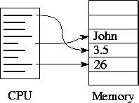
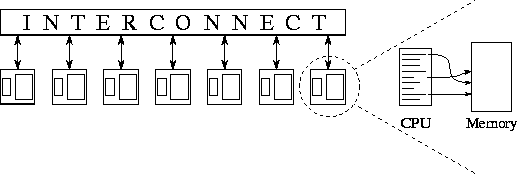
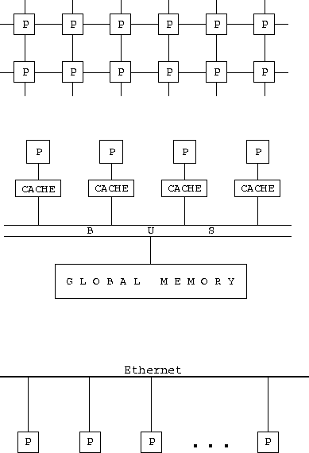

![[DBPP]](pictures//asm_color_tiny.gif)


![[Search]](pictures//search_motif.gif)
The rapid penetration of computers into commerce, science, and education owed much to the early standardization on a single machine model, the von Neumann computer. A von Neumann computer comprises a central processing unit (CPU) connected to a storage unit (memory) (Figure 1.4). The CPU executes a stored program that specifies a sequence of read and write operations on the memory. This simple model has proved remarkably robust. Its persistence over more than forty years has allowed the study of such important topics as algorithms and programming languages to proceed to a large extent independently of developments in computer architecture. Consequently, programmers can be trained in the abstract art of ``programming'' rather than the craft of ``programming machine X'' and can design algorithms for an abstract von Neumann machine, confident that these algorithms will execute on most target computers with reasonable efficiency.

Figure 1.4: The von Neumann computer. A central processing unit (CPU)
executes a program that performs a sequence of read and write
operations on an attached memory.
Our study of parallel programming will be most rewarding if we can identify a parallel machine model that is as general and useful as the von Neumann sequential machine model. This machine model must be both simple and realistic: simple to facilitate understanding and programming, and realistic to ensure that programs developed for the model execute with reasonable efficiency on real computers.
A parallel machine model called the multicomputer fits these requirements. As illustrated in Figure 1.5, a multicomputer comprises a number of von Neumann computers, or nodes, linked by an interconnection network. Each computer executes its own program. This program may access local memory and may send and receive messages over the network. Messages are used to communicate with other computers or, equivalently, to read and write remote memories. In the idealized network, the cost of sending a message between two nodes is independent of both node location and other network traffic, but does depend on message length.

Figure 1.5: The multicomputer, an idealized parallel computer model.
Each node consists of a von Neumann machine: a CPU and memory.
A node can communicate with other nodes by sending and receiving
messages over an interconnection
network.
A defining attribute of the multicomputer model is that accesses to local (same-node) memory are less expensive than accesses to remote (different-node) memory. That is, read and write are less costly than send and receive. Hence, it is desirable that accesses to local data be more frequent than accesses to remote data. This property, called locality, is a third fundamental requirement for parallel software, in addition to concurrency and scalability. The importance of locality depends on the ratio of remote to local access costs. This ratio can vary from 10:1 to 1000:1 or greater, depending on the relative performance of the local computer, the network, and the mechanisms used to move data to and from the network.

Figure 1.6: Classes of parallel computer architecture. From top
to bottom: a distributed-memory MIMD computer with a mesh
interconnect, a shared-memory multiprocessor, and a local area network
(in this case, an Ethernet). In each case, P denotes an independent
processor.
We review important parallel computer architectures (several are illustrated in Figure 1.6) and discuss briefly how these differ from the idealized multicomputer model.
The multicomputer is most similar to what is often called the distributed-memory MIMD (multiple instruction multiple data) computer. MIMD means that each processor can execute a separate stream of instructions on its own local data; distributed memory means that memory is distributed among the processors, rather than placed in a central location. The principal difference between a multicomputer and the distributed-memory MIMD computer is that in the latter, the cost of sending a message between two nodes may not be independent of node location and other network traffic. These issues are discussed in Chapter 3. Examples of this class of machine include the IBM SP, Intel Paragon, Thinking Machines CM5, Cray T3D, Meiko CS-2, and nCUBE.
Another important class of parallel computer is the multiprocessor, or shared-memory MIMD computer. In multiprocessors, all processors share access to a common memory, typically via a bus or a hierarchy of buses. In the idealized Parallel Random Access Machine (PRAM) model, often used in theoretical studies of parallel algorithms, any processor can access any memory element in the same amount of time. In practice, scaling this architecture usually introduces some form of memory hierarchy; in particular, the frequency with which the shared memory is accessed may be reduced by storing copies of frequently used data items in a cache associated with each processor. Access to this cache is much faster than access to the shared memory; hence, locality is usually important, and the differences between multicomputers and multiprocessors are really just questions of degree. Programs developed for multicomputers can also execute efficiently on multiprocessors, because shared memory permits an efficient implementation of message passing. Examples of this class of machine include the Silicon Graphics Challenge, Sequent Symmetry, and the many multiprocessor workstations.
A more specialized class of parallel computer is the SIMD (single instruction multiple data) computer. In SIMD machines, all processors execute the same instruction stream on a different piece of data. This approach can reduce both hardware and software complexity but is appropriate only for specialized problems characterized by a high degree of regularity, for example, image processing and certain numerical simulations. Multicomputer algorithms cannot in general be executed efficiently on SIMD computers. The MasPar MP is an example of this class of machine.
Two classes of computer system that are sometimes used as parallel computers are the local area network (LAN), in which computers in close physical proximity (e.g., the same building) are connected by a fast network, and the wide area network (WAN), in which geographically distributed computers are connected. Although systems of this sort introduce additional concerns such as reliability and security, they can be viewed for many purposes as multicomputers, albeit with high remote-access costs. Ethernet and asynchronous transfer mode (ATM) are commonly used network technologies.
© Copyright 1995 by Ian Foster